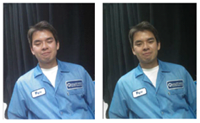

Face recognition allows the camera sensor to detect the presence of faces in an
image. Luma metering weight is modified between the face UI detection region and background
to ensure that facial colors are correct and natural.
-
In the Parameter Editor,
navigate to .
-
To enable Face ROI, select the Value check box next to
Enable Face ROI.
-
Next to Face Size, click and set the applicable values
to indicate the face area size. The Start value sets the
minimum size, while the End value sets the maximum size.
-
Next to Face Weight, click and set the applicable values
to indicate the level of brightness metering that is based on face areas. The
Start value sets the minimum weight, while the
End value sets the maximum weight.
-
Verify face AEC tuning by capturing a set of 50% FOV images with
Face ROI enabled and compare to the same images with
Face ROI disabled..
Compare the difference in brightness. There should be a difference
in brightness between the two images such that the skin tone in the image with
Face ROI enabled is optimized. The left
image is without face AEC and the right image is with face AEC.
